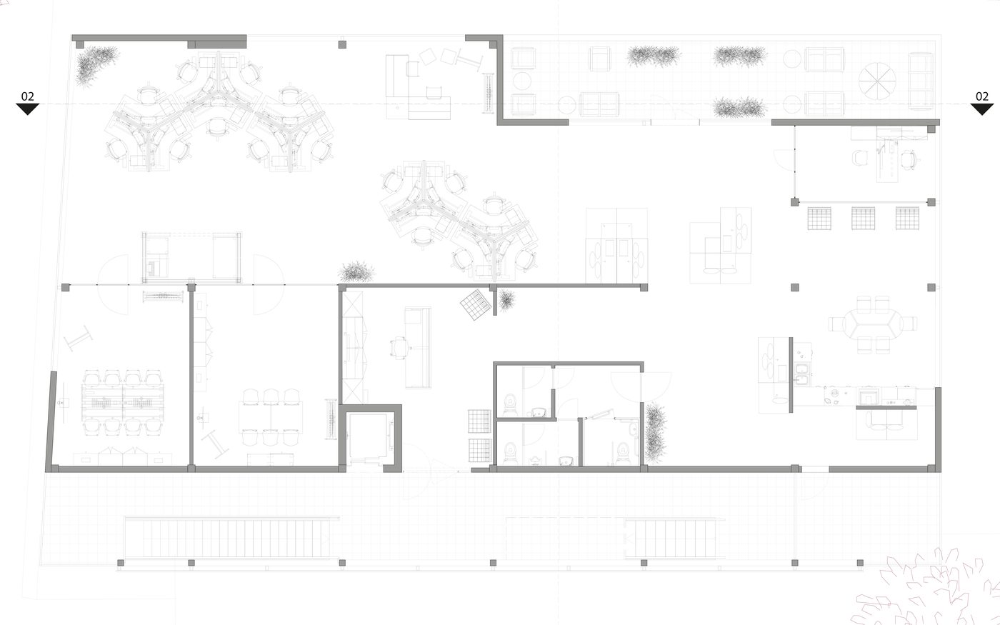

Nathan Berlemont Design
Nathan Berlemont Design
Nathan Berlemont Design
Nathan Berlemont Design
Les espaces ont été conçus à partir d'un tracé principal qui se ramifie en parcours plus restreints, afin d'optimiser au maximum la circulation intérieure. On débute par l'accueil, divisé en deux zones distinctes : d'une part le comptoir (avec son armoire) et, d'autre part, l'espace d'attente. On accède ensuite à la première partie de l'open-space, consacrée à la salle de pause et à la cuisine. La cuisine est aménagée avec un îlot en « L », favorisant la fluidité des déplacements. Deux cloisons y sont fixées : l'une dissimule une assise, tandis que l'autre sert également de cache pour une deuxième assise et de support pour la hotte. Au centre de cet espace, une table de six places permet de prendre les repas. Un peu plus loin se trouvent trois fauteuils Barcelona, disposés parallèlement au bureau de direction, dont les parois vitrées préservent la continuité de l'espace et la luminosité de la baie vitrée.
Au milieu de l'open-space, j'ai placé des modules modulaires faisant face à la grande fenêtre de la terrasse. Ce choix n'est pas fortuit : il marque la séparation entre l'espace de pause (repas du midi) et la zone de bureaux. Sur la droite, j'ai choisi d'implanter plusieurs postes de travail. Il s'agit de bureaux trois places incurvés formant deux chaînes organiques, placés de manière à profiter de la lumière naturelle tout au long de la journée. Dans l'angle droit, un espace de réunion informelle a été aménagé. Au fond, deux salles de réunion fermées sont accessibles : la première, adossée au mur et partiellement ouverte sur la baie vitrée, possède huit places assises, des rangements bas, un écran de présentation, ainsi qu'un tableau modulable ; la seconde, conçue pour six personnes, dispose des mêmes équipements avec table et chaises hautes.
Entre ces deux salles, l'espace de photocopie se trouve derrière des cloisons phonétiques. Les toilettes sont situées à proximité de la zone de pause, desservant trois espaces distincts : PMR, Hommes et Femmes. Enfin, ce projet propose deux terrasses : la première, la plus grande, équipée d'un salon extérieur pour douze personnes ; la seconde, plus petite, située près de la cuisine.

Documents
Dossier ergonomique
PDF — The Node · 16 pages